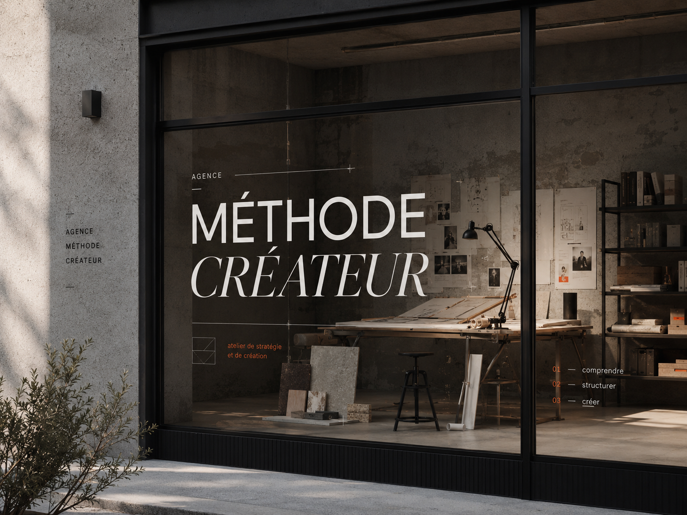
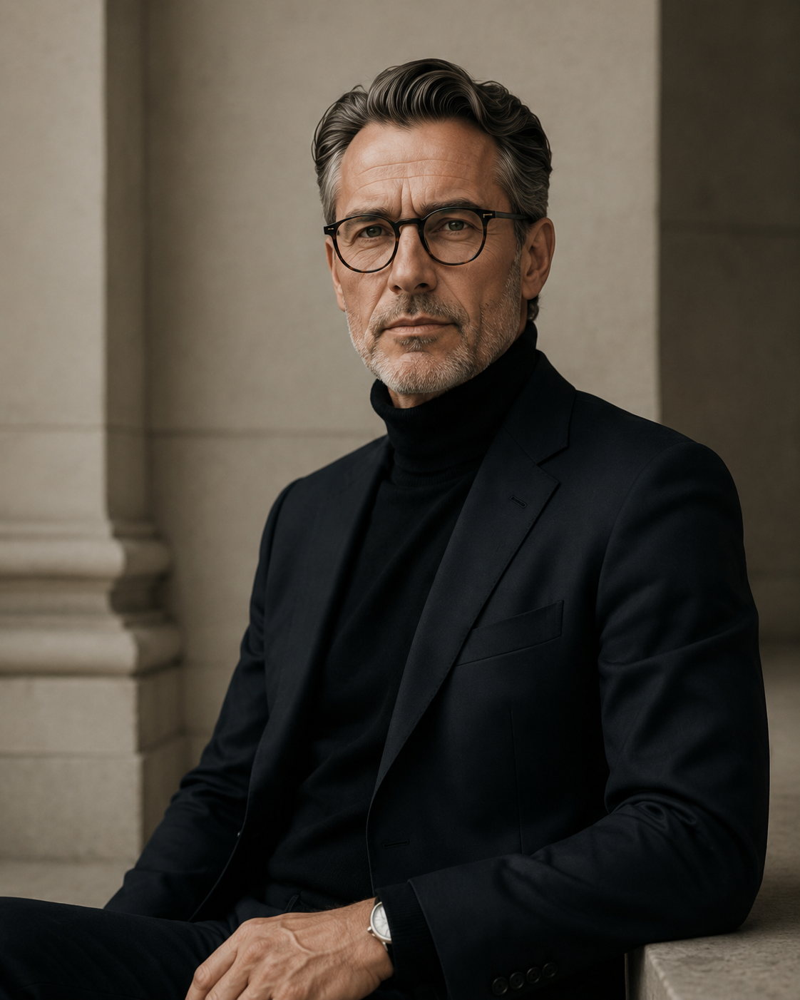
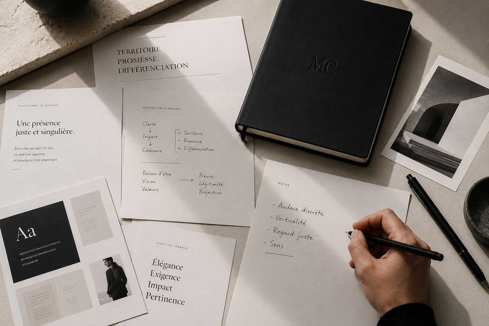
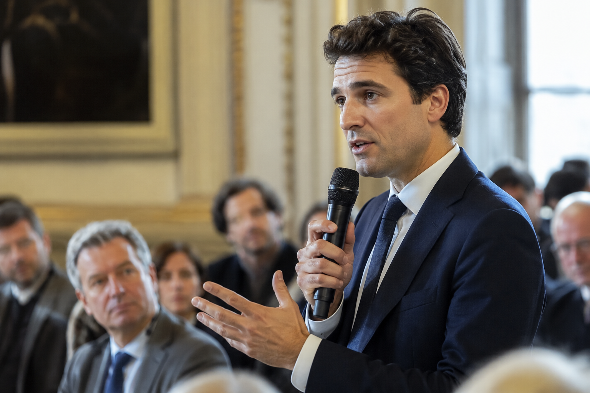

Méthode Créateur accompagne les partis politiques, avocats, notaires et institutions dans la construction d'une communication claire, crédible et premium.
Audit stratégique gratuit →
Nous accompagnons les dirigeants, les élus et les professionnels d'exception dans la construction d'une image publique à la hauteur de leur niveau d'exigence. Pas une image de façade. Une image vraie, stratégique, et irrésistiblement cohérente.

Nous transformons une singularité en positionnement, un positionnement en identité, et une identité en présence durable.
Clarifier ce qui vous rend unique. Nous définissons votre territoire, votre promesse et la posture qui vous distingue durablement.
Donner une forme juste et distinctive à votre positionnement. Nous créons les codes visuels, verbaux et digitaux qui rendent votre identité cohérente, crédible et reconnaissable.
Faire vivre votre présence dans la durée. Nous produisons et orchestrons les contenus qui renforcent votre influence et votre visibilité.

Les professionnels qui nous font confiance ne parlent pas de visuels. Ils parlent de mandats remportés, de clients conquis, de crédibilité installée.
Nous contacter →Nous travaillons exclusivement avec des professionnels dont l'image a des conséquences réelles : avocats, notaires, institutions, élus.
Des personnes pour qui être mal représenté en ligne a un coût direct — en crédibilité, en clientèle, en autorité.
C'est un métier différent. Nous l'avons choisi.

Méthode Créateur accompagne les élus, candidats et responsables politiques qui souhaitent aligner leur communication avec l'ambition de leur engagement.
Méthode Créateur accompagne les avocats et cabinets juridiques qui veulent une communication aussi solide que leur pratique.
Méthode Créateur accompagne les institutions et organisations publiques qui souhaitent moderniser leur image sans trahir leurs valeurs et renforcer la confiance du public.
Méthode Créateur accompagne les entreprises dont le niveau d'expertise, d'ambition ou de développement n'est plus reflété par leur image.
Disponible pour missions et accompagnements.
Rennes · Paris · Remote